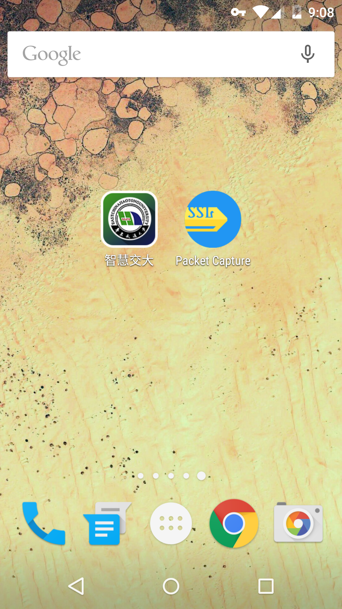
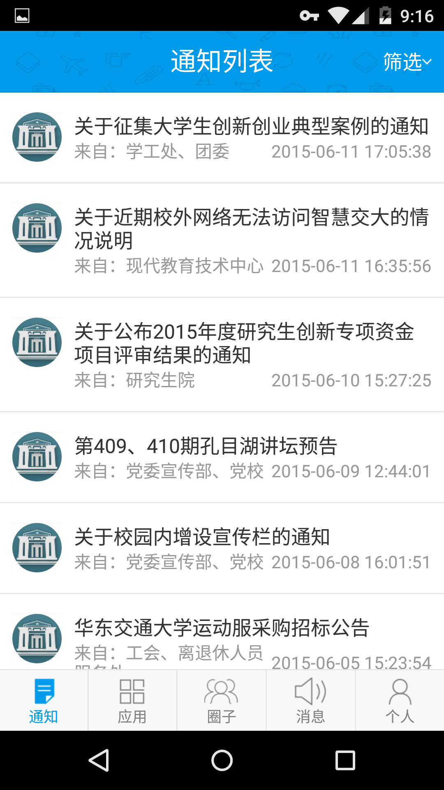
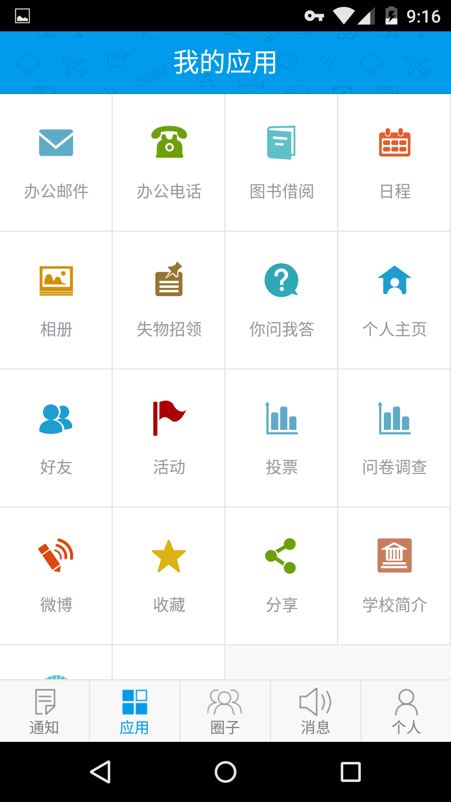
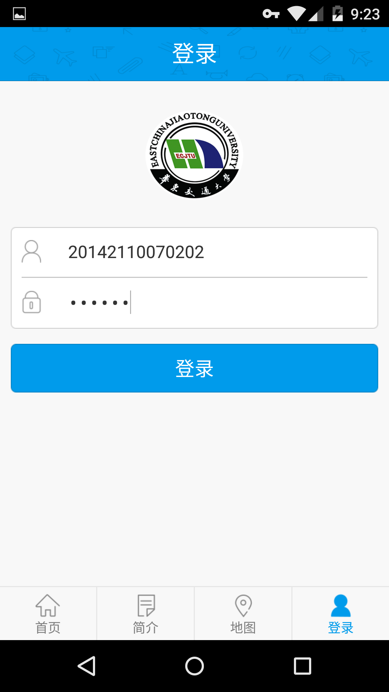
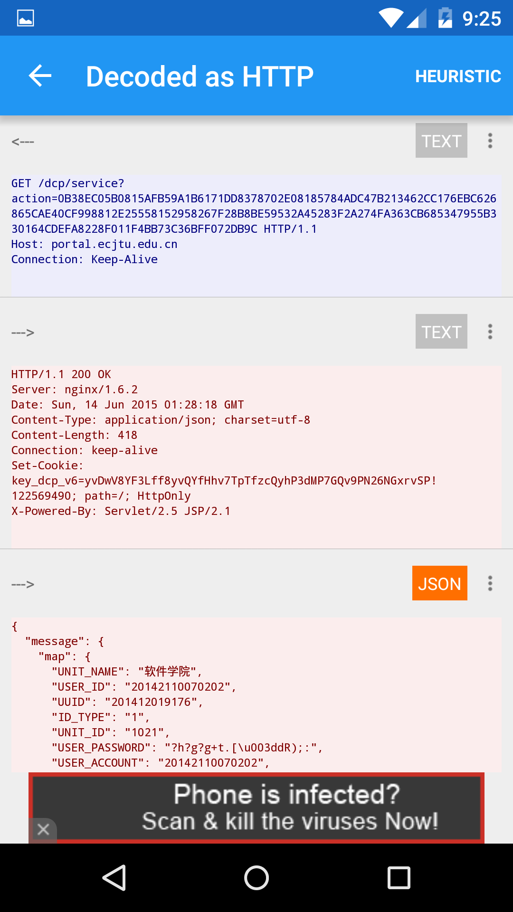
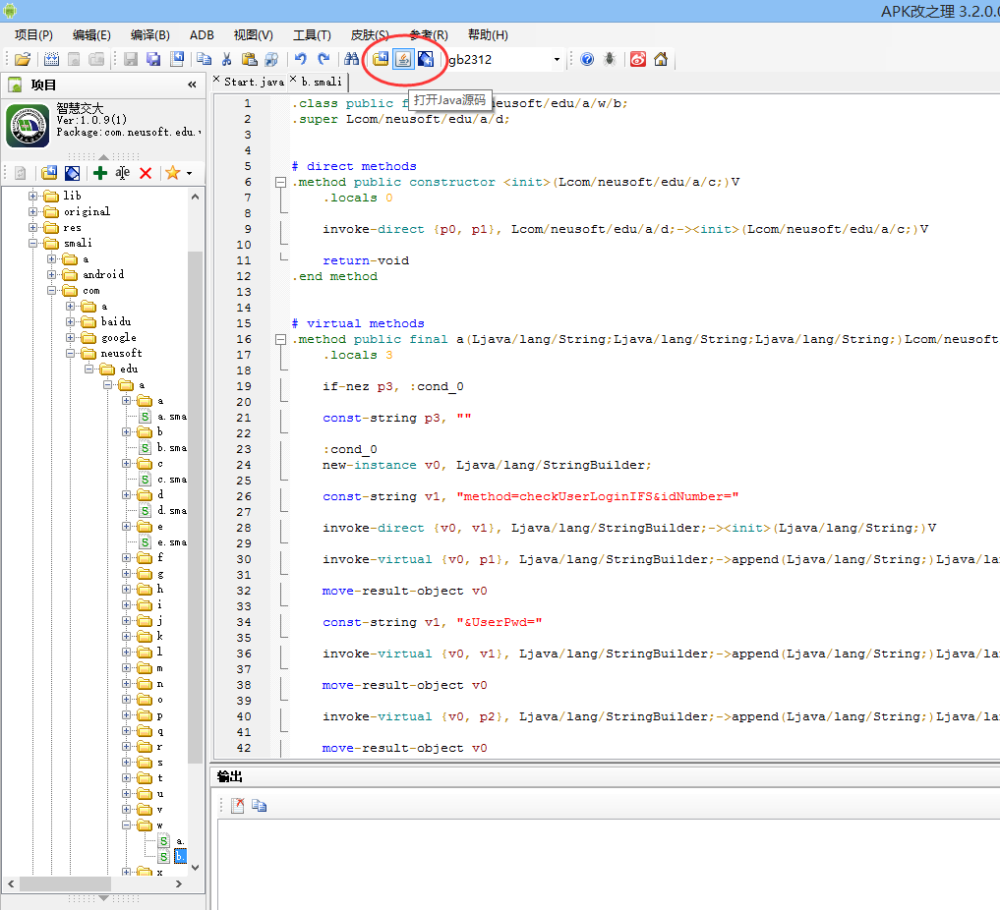
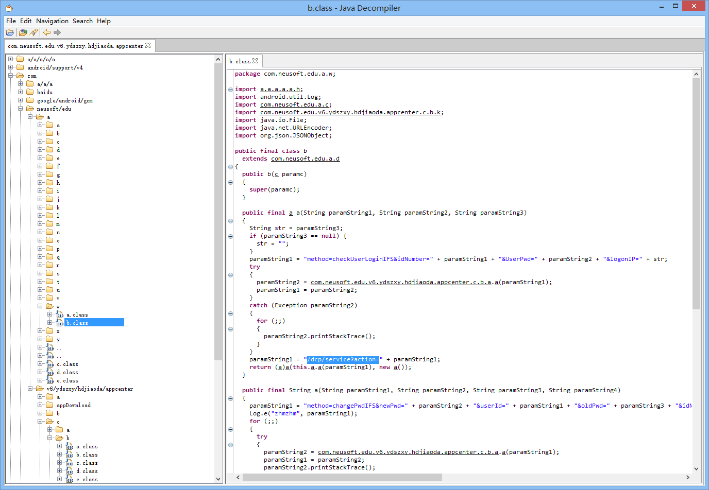
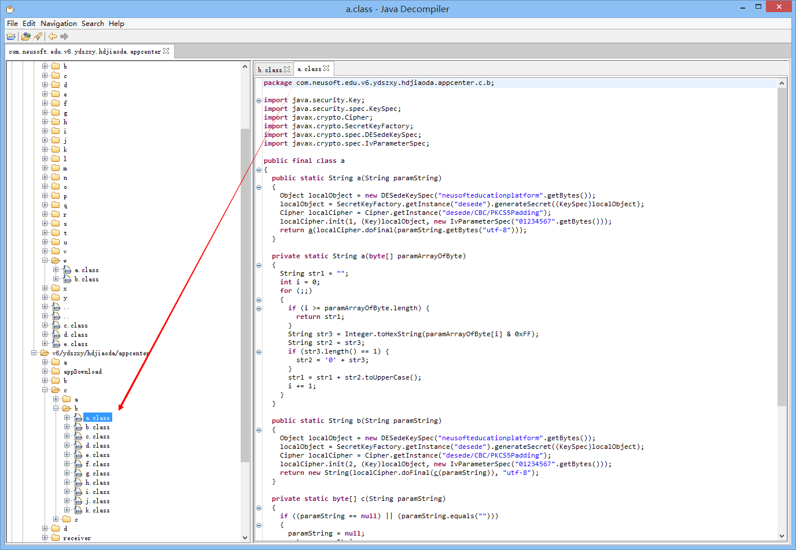

一次校园Android平台应用的逆向分析
准备
手机：Google Nexus 5
工具：
- APK改之理（APK IDE）
- Package Capture by Grey Shirts
分析文件：东软智慧校园平台（华东交大版）

先来简单看一下这个应用


我们使用这个账号登陆
1
2username:20142110070202
password:011211

打开Package Capture进行抓包

可以看到，登陆时，移动端向服务端发送一个get请求
1
portal.ecjtu.edu.cn/dcp/service?action=0B38EC05B0815AFB59A1B6171DD8378702E08185784ADC47B213462CC176EBC626865CAE40CF998812E25558152958267F28B8BE59532A45283F2A274FA363CB685347955B330164CDEFA8228F011F4BB73C36BFF072DB9C
服务器返回一段json数据
1
{"message":{"map":{"UNIT_NAME":"软件学院","USER_ID":"20142110070202","UUID":"201412019176","ID_TYPE":"1","UNIT_ID":"1021","USER_PASSWORD":"?h?g?g+t.[=dR);:","USER_ACCOUNT":"20142110070202","USER_SEX":"1","IS_ACTIVE":"1","BEGIN_TIME":"20141219","USER_FULLNAME":"史泰龙","USER_FIRST_LOGIN":"0","USER_DESCRIPTION":"史泰龙","USER_ACCOUNT_LOCKED":"1","IS_MAIN_IDENTITY":"1","END_TIME":"20600606"}},"success":true}
可见移动端与服务端之间的传输是加密的
用APK改之理打开这个app

smali不易阅读，所以点击上面的“打开Java源码”。

找到关键词 "/dcp/service?action=" 关键代码：
1
2
3
4
5
6
7
8
9
10
11
12
13
14
15
16
17
18
19
20
21
22public final a a(String paramString1, String paramString2, String paramString3)
{
String str = paramString3;
if (paramString3 == null) {
str = "";
}
paramString1 = "method=checkUserLoginIFS&idNumber=" + paramString1 + "&UserPwd=" + paramString2 + "&logonIP=" + str;
try
{
paramString2 = com.neusoft.edu.v6.ydszxy.hdjiaoda.appcenter.c.b.a.a(paramString1);
paramString1 = paramString2;
}
catch (Exception paramString2)
{
for (;;)
{
paramString2.printStackTrace();
}
}
paramString1 = "/dcp/service?action=" + paramString1;
return (a)a(this.a.a(paramString1), new a());
}
通过源码得知，paramString1本来是
1
method=checkUserLoginIFS&idNumber=xxx&UserPwd=xxx&logonIP=xxx
这样的形式，但是通过
1
com.neusoft.edu.v6.ydszxy.hdjiaoda.appcenter.c.b.a.a
方法的加密，变成了上面的get请求action后面的密文，跟踪到appcenter.c.b.a.a，

关键代码：
1
2
3
4
5
6
7
8
9
10
11
12
13
14
15
16
17
18
19
20
21
22
23
24
25
26
27public static String a(String paramString)
{
Object localObject = new DESedeKeySpec("neusofteducationplatform".getBytes());
localObject = SecretKeyFactory.getInstance("desede").generateSecret((KeySpec)localObject);
Cipher localCipher = Cipher.getInstance("desede/CBC/PKCS5Padding");
localCipher.init(1, (Key)localObject, new IvParameterSpec("01234567".getBytes()));
return a(localCipher.doFinal(paramString.getBytes("utf-8")));
}
private static String a(byte[] paramArrayOfByte)
{
String str1 = "";
int i = 0;
for (;;)
{
if (i >= paramArrayOfByte.length) {
return str1;
}
String str3 = Integer.toHexString(paramArrayOfByte[i] & 0xFF);
String str2 = str3;
if (str3.length() == 1) {
str2 = '0' + str3;
}
str1 = str1 + str2.toUpperCase();
i += 1;
}
}
通过分析，可以得知加密方式是DESede(TripleDES，对每个数据块应用三次DES加密算法)，算法模式为CBC(每个平文块先与前一个密文块进行异或后，再进行加密。)，填充算法为PKCS5Padding(The number of bytes to be padded equals to "8 - numberOfBytes(clearText) mod 8". So 1 to 8 bytes will be padded to the clear text data depending on the length of the clear text data.)，初始化向量(IV,Initialization Vector)为"01234567",向量的作用其实就是salt。
private static String a的作用应该是把bytes转成大写的Hex字符串。
于是根据分析得到的加密思路写下解密算法
1
2
3
4
5
6
7
8
9
10
11
12
13
14
15
16
17
18
19
20
21
22
23
24
25
26
27public static String desDecode(String encryptText, String pk)//encryptText为密文，pk为私钥，通过跟踪到的代码可知为"neusofteducationplatform"
throws Exception
{
java.security.Key deskey = null;
DESedeKeySpec spec = new DESedeKeySpec(pk.getBytes());
SecretKeyFactory keyfactory = SecretKeyFactory.getInstance("desede");
deskey = keyfactory.generateSecret(spec);
Cipher cipher = Cipher.getInstance("desede/CBC/PKCS5Padding");
IvParameterSpec ips = new IvParameterSpec("01234567".getBytes());
cipher.init(2, deskey, ips);
System.out.println(encryptText);
byte decryptData[] = cipher.doFinal(hexStringToBytes(encryptText));
return new String(decryptData, "utf-8");
}
public static String Bytes2HexString(byte b[])
{
String ret = "";
for(int i = 0; i < b.length; i++)
{
String hex = Integer.toHexString(b[i] & 0xff);
if(hex.length() == 1)
hex = (new StringBuilder(String.valueOf('0'))).append(hex).toString();
ret = (new StringBuilder(String.valueOf(ret))).append(hex.toUpperCase()).toString();
}
return ret;
}
把之前get请求后面的
1
0B38EC05B0815AFB59A1B6171DD8378702E08185784ADC47B213462CC176EBC626865CAE40CF998812E25558152958267F28B8BE59532A45283F2A274FA363CB685347955B330164CDEFA8228F011F4BB73C36BFF072DB9C
扔进去解，得到
1
method=checkUserLoginIFS&idNumber=20142110070202&UserPwd=011211&logonIP=10.0.8.1
到这里可能有人会问，这里的UserPwd=011211与上面json的USER_PASSWORD=?h?g?g+t.[=dR);:不一样，这里是字符串加密后得到的数据。 附上解密代码
1
2
3
4
5
6
7
8
9
10
11
12
13
14
15
16public static String Decode(String varCode)
{
String des = new String();
String strKey = new String();
if(varCode == null || varCode.length() == 0)
return "";
strKey = "zxcvbnm,./asdfghjkl;'qwertyuiop[]\1234567890-=` ZXCVBNM<>?:LKJHGFDSAQWERTYUIOP{}|+_)(*&^%$#@!~";
if(varCode.length() % 2 == 1)
varCode = (new StringBuilder(String.valueOf(varCode))).append("?").toString();
des = "";
int n;
for(n = 0; n <= varCode.length() / 2 - 1; n++) { char b = varCode.charAt(n * 2); int a = strKey.indexOf(varCode.charAt(n * 2 + 1)); des = (new StringBuilder(String.valueOf(des))).append((char)(b ^ a)).toString(); System.out.println(des); } n = des.indexOf('01'); if(n > 0)
return des.substring(0, n);
else
return des;
}
参考
Java Class Cipher Java加密技术（二）——DES数据加密算法(和加IV向量版) 分组密码的工作模式 What Is PKCS5Padding?